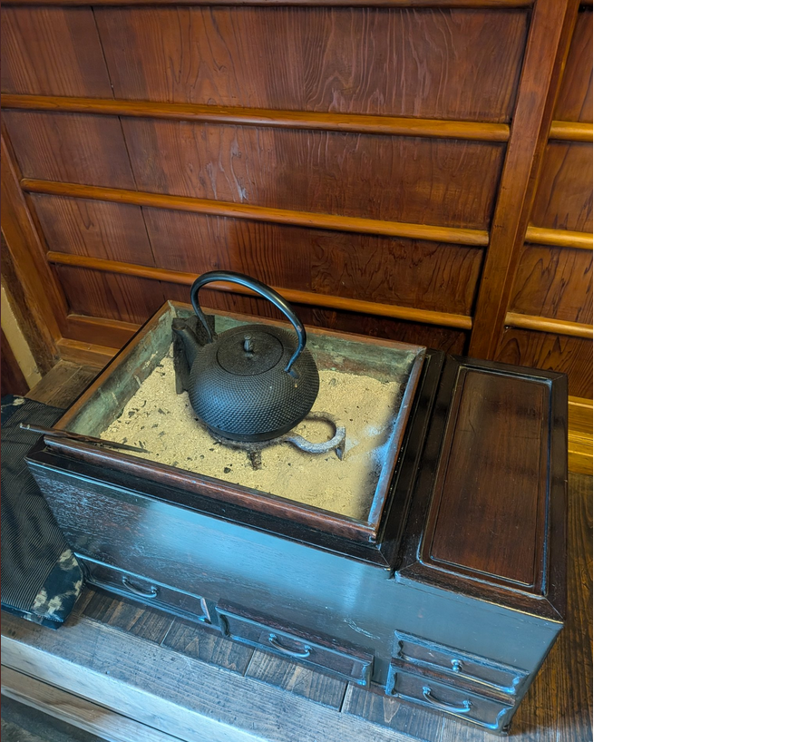

風和里（ふわり）の古民家に残る火鉢は、日本の伝統的な生活道具のひとつであり、寒い冬に家族や仲間が集まり、囲んで温まるために使われてきました。火鉢は単なる暖房器具ではなく、炭火のやわらかいぬくもりとともに、人と人との交流を育んできた象徴的な存在です。とくに京都府和束町のような茶文化が根付いた地域では、火鉢の炭でお湯を沸かし、お茶を淹れるなど、暮らしの中に自然に取り入れられてきました。現在では電気やガスが主流になったため、火鉢を実際に使う家庭は少なくなりましたが、古民家「風和里」に残されている火鉢の写真からは、昔ながらの日本の暮らしや和の情緒を感じることができます。地域の歴史や伝統文化に関心のある方にとっても、この火鉢は「日本の生活文化を学び、味わうことのできる貴重な存在」といえるでしょう。
